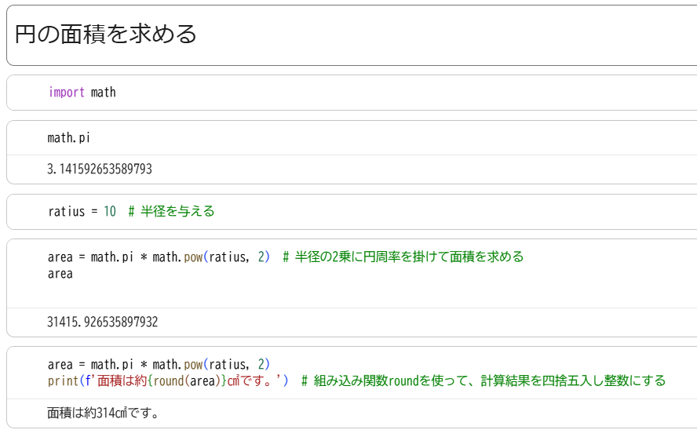

テキスト処理
講義進度: 第9回
標準ライブラリによるテキスト処理の主な目的は、文字や記号としての加工や整形です。
扱う単位は「文字列」や「単語（文字のまとまり）」であり、Pythonの str 型を直接操作します。
一方、自然言語処理（NLP）ライブラリでは、テキストを意味として捉え、分析の対象とします。
解説動画:（11:11）
24. Pythonで文字列の操作をしよう | 中学生でもわかるPython入門シリーズ
リンク先：24. Pythonで文字列の操作をしよう | 中学生でもわかるPython入門シリーズ@imanyu_programming
標準ライブラリとNLPライブラリの比較
| 観点 | 標準ライブラリ | 自然言語処理ライブラリ |
|---|---|---|
| 扱う単位 | 文字・記号 | 単語・文・意味 |
| 目的 | 整形・抽出・変換 | 理解・分析・生成 |
| 例 | re, string, textwrap |
spaCy, MeCab, nltk |
| 出力 | 「文字列」や「リスト」 | 「文法構造」や「意味ベクトル」 |
標準ライブラリ一を活用したテキスト処理
| 処理内容 | 使うモジュール・関数・メソッド |
|---|---|
| 大文字・小文字の変換 | str.upper(), str.lower() |
| 文字列の分割・結合 | str.split(), str.join() |
| パターン検索 | re（正規表現モジュール） |
| 整形・インデント | textwrap, str.format() |
| 特定文字の除去・置換 | str.replace(), str.translate() |
re と textwrap モジュールのインポート
import re, textwrap
import re, textwrap は、これらのモジュールをこのスクリプトで利用可能にする **import 文** です。
文字の変換（大文字・小文字）例題１
大文字・小文字の変換
import re, textwrap
text = "apple orange banana"
print("upper:", text.upper())
print("lower:", text.lower())【出力結果】 upper: APPLE ORANGE BANANA lower: apple orange banana
文字列の分割・結合 例題2
文字列の分割・結合
import re, textwrap
text = "apple orange banana"
words = text.split()
print("split:", words)
# 空白で分割 → リストになる
print("join (ハイフン):", "-".join(words))
# ハイフンで結合
print("join (改行):")
print("\n".join(words))
# 改行で結合 → 一行ずつ表示【出力結果】 split: ['apple', 'orange', 'banana'] join (ハイフン): apple-orange-banana join (改行): apple orange banana
パターン検索（正規表現）例題3
パターン検索（正規表現）
import re, textwrap
sentence = "I like apples and bananas."
found = re.findall(r"\b[a-z]+es\b", sentence)
print("re.findall:", found)
# 説明: \b=単語境界, [a-z]+=小文字1文字以上, esで終わる単語を抽出
# 前提: 英文/小文字を対象（必要なら lower() を使用）【出力結果】 re.findall: ['apples']
整形（textwrap）例題4
整形（textwrap）
import re, textwrap
text = "Python makes text handling simple and clear."
wrapped = textwrap.fill(text, width=25)
print("textwrap整形:\n", wrapped)
# textwrap.fill() → 指定幅で自動改行
# print() 内の \n は「改行コード」：改行位置を指示する特殊文字
# 前提: 長い文字列を一定幅で折り返して表示したい場合【出力結果】 textwrap整形: Python makes text handling simple and clear.
書式化（format) 例題5
書式化（format）
import re, textwrap
formatted = "My name is {}, I like {}.".format("Mari", "tea")
print("format:", formatted)
# str.format() → 文字列中の {} を順に置き換える
# 前提: 変数の値を文中に埋め込みたい場合
# 補足: f文字列（例: f"My name is {name}"）も同じ目的で使える
# \n を使えば改行した出力も可能（例: print("Hello\\nWorld")）【出力結果】 format: My name is Mari, I like tea.
特定文字の除去・置換 例題6
特定文字の除去・置換（replace, translate）
import re, textwrap
msg = "Hello, Python!"
print("replace:", msg.replace("Python", "World"))
# replace() → 特定の文字列を別の文字列に置き換える
tbl = str.maketrans({"H": "☆", "!": "♪"})
print("translate:", msg.translate(tbl))
# translate() → 文字単位で複数同時に置換
# \n を使えば、置換結果を改行して表示することも可能
# 例: print("Hello\nWorld") → 2行に分けて出力【出力結果】 replace: Hello, World! translate: ☆ello, Python♪
エスケープ文字（Escape Sequence）の基本
| 記述 | 意味 |
|---|---|
\n |
改行（newline） |
\t |
タブ（tab） |
\\ |
バックスラッシュそのもの |
\" |
ダブルクォートを文字として扱う |
\' |
シングルクォートを文字として扱う |
\r |
復帰（キャリッジリターン） |
\f |
改ページ（フォームフィード） |
\b |
バックスペース（※正規表現の \b とは別） |
\uXXXX |
Unicodeコードポイント指定（例：\u3042 → あ） |
正規表現
| 記号 | 意味 |
|---|---|
. |
任意の1文字（改行以外） |
\d |
数字（0〜9） |
\s |
空白（スペース・タブ・改行など） |
\w |
英数字とアンダースコア |
^ |
行の先頭 |
$ |
行の末尾 |
* |
直前の文字が0回以上繰り返し |
+ |
直前の文字が1回以上繰り返し |
? |
直前の文字が0回または1回 |
{n} |
直前の文字がn回繰り返し |
{n,m} |
n回以上m回以下繰り返し |
[abc] |
a, b, c のいずれか1文字 |
[^abc] |
a, b, c 以外の1文字 |
| |
または（OR） |
\b |
単語の境界（word boundary） |
() |
グループ化（部分一致） |
円の半径から面積を求める

実習10 円の面積
chapter1 のノートブックにつづけて以下の実習をしなさい
- テキストセルを挿入して、
### 実習10 円の面積と入力しよう。みんなが大好きなピザのサイズを使って、Pythonで計算してみるよ。 - コードセルを挿入して、変数
radiusを作ってみよう。これはピザの半径（cm）を表すんだ。 - 次に、ピザの面積を計算する式を作って、
areaという変数に代入しよう。mathモジュールを使って、math.piとmath.pow()を組み合わせてね。 - 計算結果が小数になったら、最後に
round()関数を使って「だいたいこのくらい」って感じで、整数にして表示してみよう。 - どれくらいの面積か、print関数を使って表示してね。「このピザは約○○cm²です」って感じでね🍕
標準ライブラリ一の活用例（datetime）
datetime モジュールのインポート
from datetime import date,datetime,timedelta
datetime モジュールで使える機能一覧
| 機能名 | 書き方 | 型（タイプ） | 内容・説明 | 使う場面の例 |
|---|---|---|---|---|
| 今日の日付 | date.today() |
datetime.date |
今日の年月日だけを取得 | 学期の開始・終了日などに使う |
| 今の日時 | datetime.now() |
datetime.datetime |
今日の年月日＋時刻を取得 | 時間まで正確に記録したいとき |
| 時間の差 | timedelta(days=7) |
datetime.timedelta |
指定日数のずれを作る | 1週間後、30日前などを計算 |
| 日付の引き算 | 日付2 - 日付1 |
timedelta |
2つの日付の差を計算 | 誕生日まであと何日？など |
| 日付の加算 | 日付 + timedelta(...) |
datetime.date |
日付にズレを加えて未来を求める | 提出日・試験日などの予測 |
pythonで日付に関する計算をする
from datetime import date, datetime, timedelta
date（日付）, datetime（日時）, timedelta（時間の差）をインポート
today = date.today() # 今日の日付を取得（date型）
print(today) # 出力例：2025-11-05
now = datetime.now() # 現在の日時を取得（datetime型）
print(now) # 出力例：2025-11-05 23:06:30.123456
nextweek = today + timedelta(days=7) # 7日分の「時間差」を today に加えるprint(nextweek) # 出力例：2025-11-12
pythonで日付の差分を計算する
from datetime import datetime
lastday = datetime(2026, 1, 22)
today = datetime.now()
left = lastday - today # 日時の差（timedelta型）が計算される
print(left.days) # .days で差分から「日数」だけを取り出して表示する
実習11 次の誕生日までの日数
上の例題を参考に、自分の次の誕生日までの日数を求めましょう
参考文献
- 教科書参照ページP.130-P.140:「関数の書き方を覚えよう」
- 参考サイト：python早見帳 ４.関数